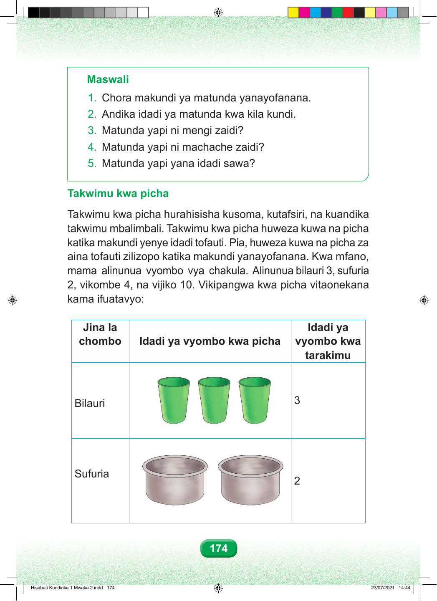

Maswali 1. Chora au tenga makundi ya matunda yanayofanana. 2. Andika idadi ya matunda kwa kila kundi. 3. Matunda yapi ni mengi zaidi? 4. Matunda yapi ni machache zaidi? 5. Matunda yapi yana idadi sawa? Takwimu kwa picha Takwimu kwa picha hurahisisha kusoma, kutafsiri, na kuandika takwimu mbalimbali. Takwimu kwa picha huweza kuwa na picha katika makundi yenye idadi tofauti. Pia, huweza kuwa na picha za aina tofauti zilizopo katika makundi yanayofanana. Kwa mfano, mama alinunua vyombo vya chakula. Alinunua bilauri 3, sufuria 2, vikombe 4, na vijiko 10. Vikipangwa kwa picha vitaonekana kama ifuatavyo: Mstari wa kwanza una bilauri. Kuna picha tatu za bilauri. Idadi kwa tarakimu ni tatu. Mstari wa pili una sufuria. Kuna picha mbili za sufuria. Idadi kwa tarakimu ni mbili. Jedwali lina safu tatu. Safu ya kwanza ina jina la chombo. Safu ya pili ina idadi ya vyombo kwa picha. Safu ya tatu ina idadi ya vyombo kwa tarakimu. Jina la Idadi ya chombo Idadi ya vyombo kwa picha vyombo kwa tarakimu 3 Bilauri Sufuria 2 174 Hisabati Kundirika 1 Mwaka 2.indd 174 23/07/2021 14:44